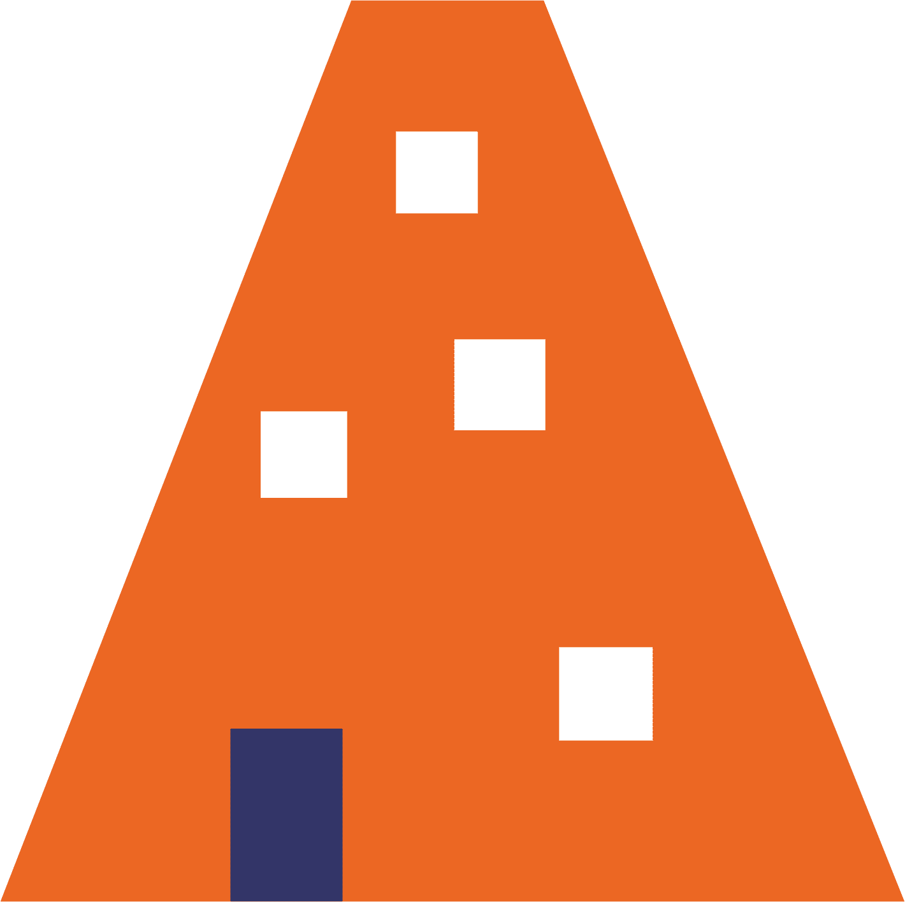
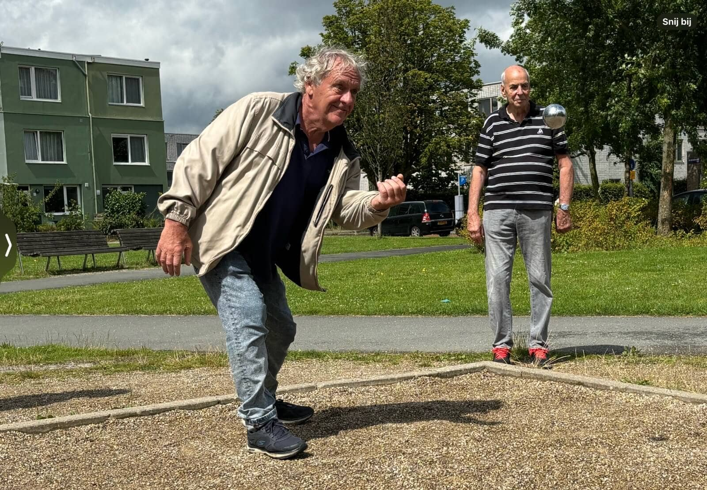

Nieuws
De nieuwe look van de Buurtcampus:
Hulp bij Digitaal helpt buurtbewoners met hun digitale vragen: Het doorsturen van een e-mail is een stuk eenvoudiger
dan het leek

Onderwijs, onderzoek en praktijk komen samen in de Lang Leven Thuisflats

Ellen Züricher is deelnemer van de wandelclub in Oost: We kijken reikhalzend uit naar onze ontmoetingen